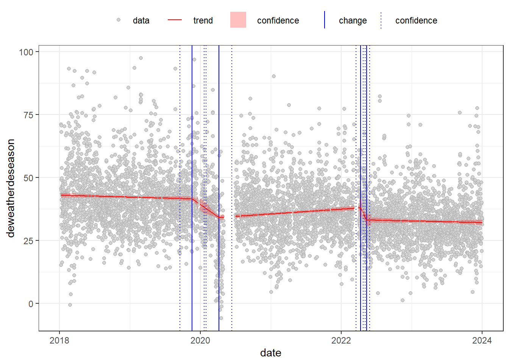
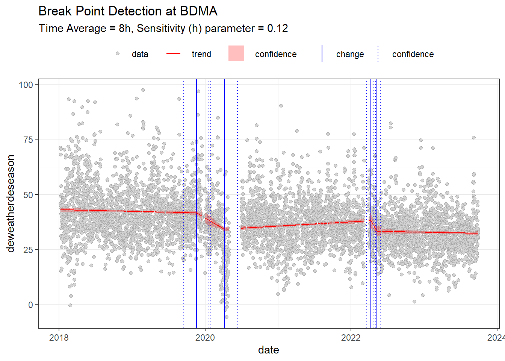

Before we start the analysis, we need to load the required libraries. The AQEval package provides functions for trend analysis and breakpoint detection, while openair offers tools to import and visualize air quality data.
The following objects are masked from 'package:stats':
filter, lag
The following objects are masked from 'package:base':
intersect, setdiff, setequal, union
library(lubridate)
Attaching package: 'lubridate'
The following objects are masked from 'package:base':
date, intersect, setdiff, union
library(worldmet)library(glue)
Data Retrieval
We will retrieve data for a specific site (in this case, "bdma") from the AURN database. The data spans the years 2018 to 2023. Note: The range operator (2018:2023) in R generates a sequence of years to download data for multiple years at once.
data =importAURN(site ='bdma', year =2018:2023)
Data Inspection
After downloading the data, it is good practice to inspect it. We use summary() to get an overview of the data frame and print() to display the first 10 rows. This helps verify that the data has been loaded correctly and gives insight into its structure.
summary(data)
site code date
Length:52584 Length:52584 Min. :2018-01-01 00:00:00
Class :character Class :character 1st Qu.:2019-07-02 17:45:00
Mode :character Mode :character Median :2020-12-31 11:30:00
Mean :2020-12-31 11:30:00
3rd Qu.:2022-07-02 05:15:00
Max. :2023-12-31 23:00:00
nox no2 no ws
Min. : 1.363 Min. : 0.175 Min. : 0.341 Min. : 0.000
1st Qu.: 39.078 1st Qu.: 19.456 1st Qu.: 12.096 1st Qu.: 2.400
Median : 67.501 Median : 32.243 Median : 22.672 Median : 3.500
Mean : 89.045 Mean : 37.190 Mean : 33.831 Mean : 3.872
3rd Qu.:116.474 3rd Qu.: 51.208 3rd Qu.: 42.437 3rd Qu.: 5.000
Max. :952.880 Max. :169.909 Max. :510.640 Max. :17.300
NA's :3442 NA's :3442 NA's :3437 NA's :1200
wd air_temp
Min. : 0.0 Min. :-7.500
1st Qu.:138.0 1st Qu.: 4.900
Median :244.1 Median : 8.600
Mean :210.0 Mean : 8.961
3rd Qu.:284.3 3rd Qu.:12.900
Max. :360.0 Max. :31.000
NA's :1200 NA's :1200
print(data[1:10,])
# A tibble: 10 × 9
site code date nox no2 no ws wd air_temp
<chr> <chr> <dttm> <dbl> <dbl> <dbl> <dbl> <dbl> <dbl>
1 Bradford Ma… BDMA 2018-01-01 00:00:00 NA NA NA 6.5 262 4.1
2 Bradford Ma… BDMA 2018-01-01 01:00:00 NA NA NA 6.7 254. 4
3 Bradford Ma… BDMA 2018-01-01 02:00:00 NA NA NA 7.2 247. 3.7
4 Bradford Ma… BDMA 2018-01-01 03:00:00 NA NA NA 7 249 3.9
5 Bradford Ma… BDMA 2018-01-01 04:00:00 NA NA NA 7 250. 4
6 Bradford Ma… BDMA 2018-01-01 05:00:00 NA NA NA 5.9 250. 3.9
7 Bradford Ma… BDMA 2018-01-01 06:00:00 NA NA NA 5.3 249. 3.9
8 Bradford Ma… BDMA 2018-01-01 07:00:00 NA NA NA 4.4 245. 3.7
9 Bradford Ma… BDMA 2018-01-01 08:00:00 NA NA NA 4 241. 3.4
10 Bradford Ma… BDMA 2018-01-01 09:00:00 NA NA NA 4.5 245. 4.2
Initial Visualisations
Time Plot
A quick visualization of the raw time series for the nitrogen dioxide (no2) concentration can be produced with timePlot(). This helps in understanding the overall trends and variability in the data.
Air quality data is often influenced by meteorological conditions and seasonal variations. To isolate the contribution of pollutants from these effects, we use the isolateContribution() function. Here, we remove both seasonal patterns and weather-related influences (using the background variable "air_temp").
Typically we prefer our data to be averaged to 8-hour intervals to smooth out shorter term fluctuations. We can do this using the timeAverage() function from openair.
We can now find our break points. Breakpoint detection helps in identifying moments when the statistical properties of the data change, which can indicate shifts in pollution sources or the effectiveness of control measures. We perform this analysis on the 8-hour averaged data. The sensitivity parameter h determines the resolution of the breakpoints (a lower value can capture finer details but may require more computation time). We have set the h parameter to 0.3 for this example as it is quicker to run, but we would normally evaluate this data with h=0.12 for 8-hour data resolution. Experiment with different h parameters to see what you can find.
2018-01-01 to 2019-11-18 16:00:00 (686.666666666667)
NA->41.56;NA (NA%)
2019-11-18 16:00:00 to 2020-04-06 (139.333333333333)
41.56->34.13;-7.425 (-17.87%)
2020-04-06 to 2022-04-10 (734)
34.13->37.96;3.828 (11.22%)
2022-04-10 to 2022-05-10 16:00:00 (30.6666666666667)
37.96->33.17;-4.789 (-12.62%)
2022-05-10 16:00:00 to 2023-12-31 16:00:00 (600)
33.17->32.12;-1.052 (-3.171%)
Warning: Removed 22 rows containing missing values or values outside the scale range
(`geom_path()`).

Visualising the Break Points
We can customise the time range and add descriptive labels to the plots to make them more interpretable. We now set a custom date range and add a title and subtitle to the breakpoint detection plot quant_break_segments$plot.
start_date <-as.POSIXct("2018-01-01 00:00:00", format ="%Y-%m-%d %H:%M:%S")end_date <-as.POSIXct("2023-09-30 00:00:00", format ="%Y-%m-%d %H:%M:%S")custom_plot <- quant_break_segments$plot +labs(title ="Break Point Detection at BDMA",subtitle ="Time Average = 8h, Sensitivity (h) parameter = 0.12" ) +scale_x_datetime(limits =c(start_date, end_date) )custom_plot
Warning: Removed 301 rows containing missing values or values outside the scale range
(`geom_path()`).

View The Report
It is good to visualise the trends to get an understanding of the general direction of the data set however it is just as important to report on the quantitative values that these methods produce. A full report can be extracted from the results.
print(quant_break_segments$report)
s1.date1 s1.date2 s1.date.delta s1.c0 s1.c1
1 2018-01-01 00:00:00 2019-11-18 16:00:00 686.66667 days NA 41.55594
2 2019-11-18 16:00:00 2020-04-06 00:00:00 139.33333 days 41.55594 34.13056
3 2020-04-06 00:00:00 2022-04-10 00:00:00 734.00000 days 34.13056 37.95836
4 2022-04-10 00:00:00 2022-05-10 16:00:00 30.66667 days 37.95836 33.16978
5 2022-05-10 16:00:00 2023-12-31 16:00:00 600.00000 days 33.16978 32.11792
s1.c.delta s1.per.delta
1 NA NA
2 -7.425381 -17.868397
3 3.827796 11.215156
4 -4.788582 -12.615356
5 -1.051860 -3.171141
Meteorological Data Using WorldMet
We may need to integrate different data sets into our analysis. One useful package for doing this is worldmet. This package allows us to access different weather sites. In this code we identify the bradford_met site id and use the worldmet::importNOAA() function to download it.
Importing NOAA Data ■■■■■■■■■■■■■■■■■■ 57% | ETA: 19s
Importing NOAA Data ■■■■■■■■■■■■■■■■■■■■■■ 71% | ETA: 14s
Importing NOAA Data ■■■■■■■■■■■■■■■■■■■■■■■■■■■ 86% | ETA: 6s
We can use the left_join function to join two data frames, data and met_data based on the content of the by argument. Note that the worldmet and openair packages are designed to work nicely together so do not need any modification, but if you have different data sets that do not have consistently labelled columns then you may have to do some extra steps here.